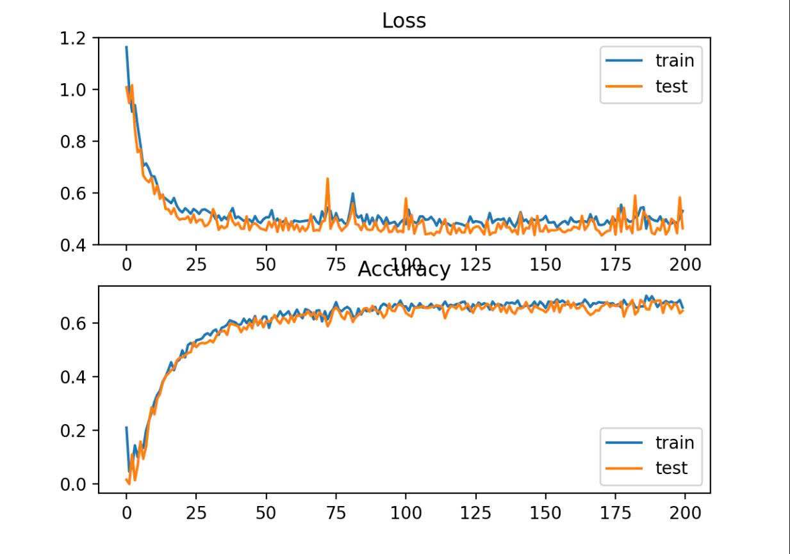
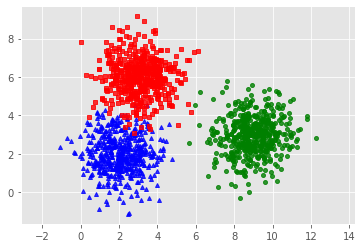
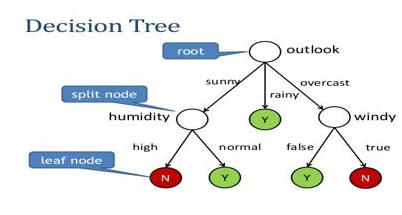
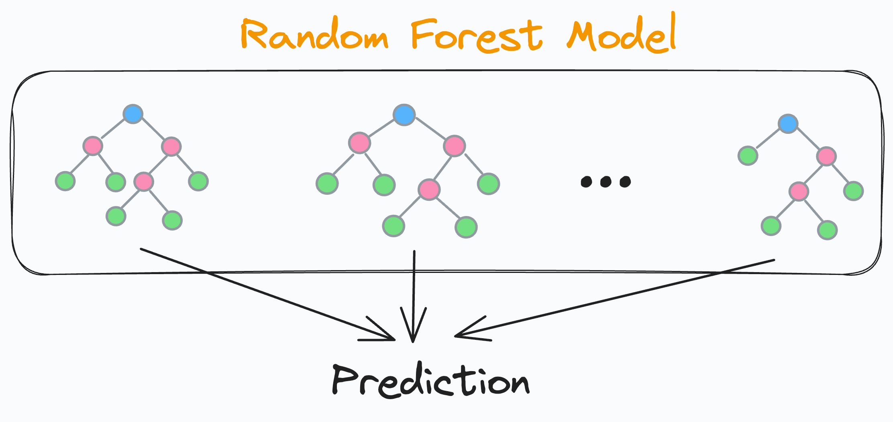
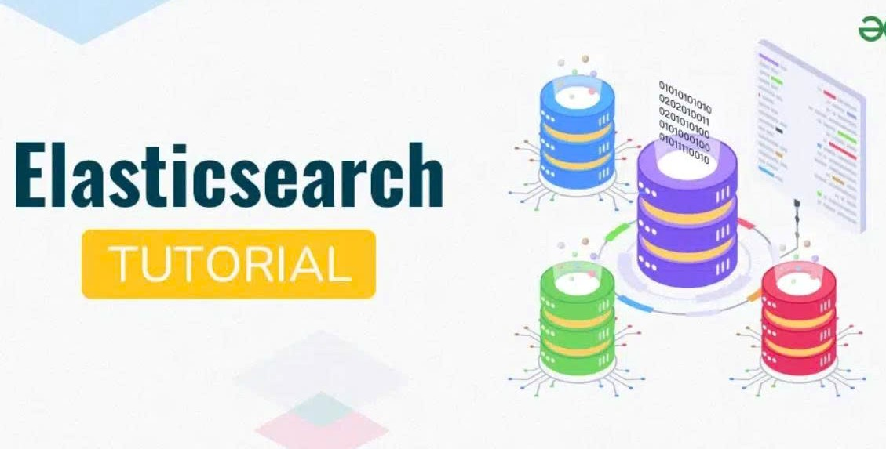

Các hàm loss quan trọng trong học máy
Giới thiệu MSE, MAE, Huber, Focal Loss – cách chọn loss function phù hợp cho từng bài toán.
30 Thg 03 2026Nghung Blog
Nhóm bài viết về học máy.

Giới thiệu MSE, MAE, Huber, Focal Loss – cách chọn loss function phù hợp cho từng bài toán.
30 Thg 03 2026
Phân cụm không giám sát, cơ sở toán học và phương pháp chọn số cụm tối ưu.
30 Thg 03 2026
Cây quyết định cho phân loại và hồi quy, các chỉ số Gini, Entropy và cách xây dựng cây.
30 Thg 03 2026
Bagging, Boosting và Random Forest – kết hợp nhiều mô hình để tăng độ chính xác.
30 Thg 03 2026
Rừng cây quyết định – cơ chế bagging, random subspace và đánh giá độ quan trọng đặc trưng.
30 Thg 03 2026
Kiến thức nền về hệ quản trị cơ sở dữ liệu quan hệ và cách tổ chức dữ liệu hợp lý.
30 Thg 03 2026
Lưu trữ và tìm kiếm embedding, các độ đo khoảng cách L2, Cosine, Dot Product.
30 Thg 03 2026
Công cụ tìm kiếm và phân tích phân tán, kiến trúc, nguyên lý hoạt động và inverted index.
30 Thg 03 2026Định nghĩa Docker, Image, Container và các cú pháp dòng lệnh cơ bản.
30 Thg 03 2026Biến script phân tích thành dashboard tương tác, không cần HTML/CSS.
30 Thg 03 2026
Xây dựng REST API nhanh, tự động validate, hỗ trợ WebSocket và OpenAPI.
30 Thg 03 2026Tạo môi trường độc lập, cài đặt gọi đa ngôn ngữ, tái tạo môi trường dễ dàng.
30 Thg 03 2026